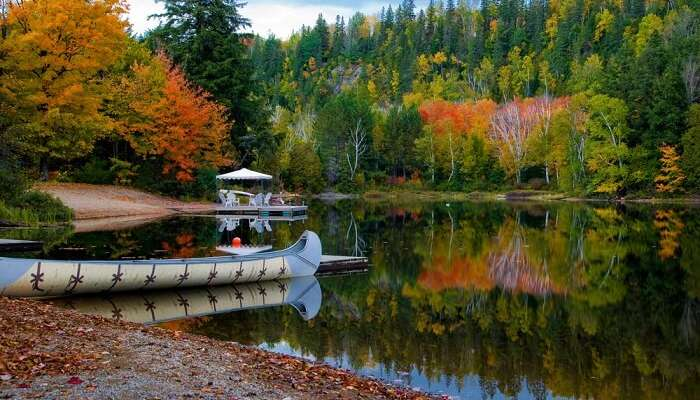

Home
Places
Get Quotation
Blogs
Testimonials
Sign In
Help
Contact Us
Ask A Question
ICONIC PLACES TO VISIT IN CANADA
Niagara Falls
Gros Morne National Park
Casa Loma
Quebec City
Banff National Park
Algonquin Provincial Park

Toronto's CN Tower
Quick survay